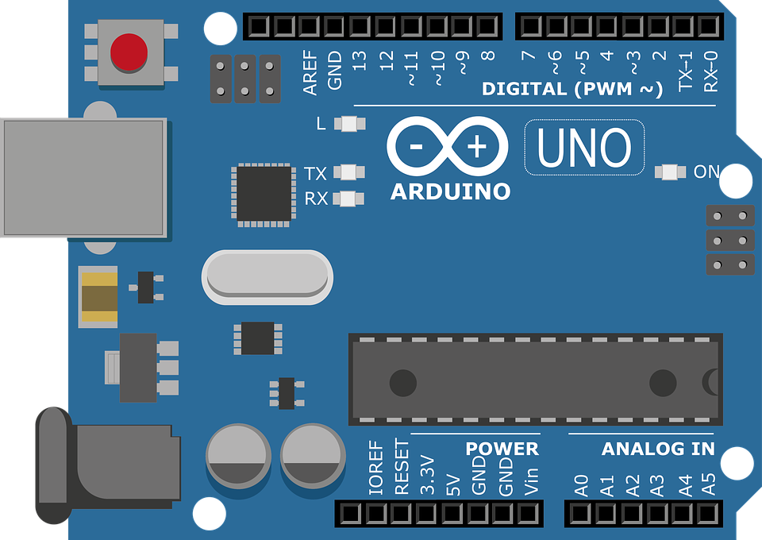
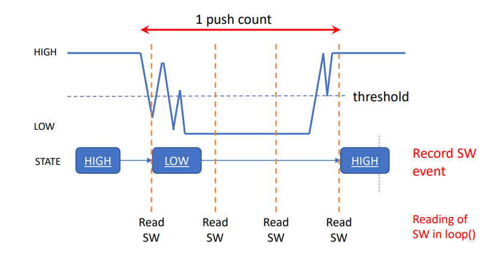

We are to write simple programs with the Arduino IDE and Uno R3 board. We test the programs on the TinkerCAD simulator first before wiring and implementing the actual circuits on the physical Arduino board. Here are the programming assignments :
Simple LED Control
blinking LEDs
One Switch Many States
4 LED StatesDebouncing Error

TinkerCAD
This is an exercise to do a simple LED control using Arduino IDE. We are tasked to make the LED blink using delays.
Code
Defining Variables
#define is a useful C++ component that allows the programmer to give a name to a constant value before the program is compiled. Defined constants in arduino don't take up any program memory space on the chip. Then simply set the constants (LEDs) as OUTPUT Pins.
Code
Blinking LEDs
In a loop, to make the LED to blink, add delays in between the HIGH and LOW values of the LED digital pin.
TinkerCAD
Debouncing

Button Bounce
One of the issues faced was the bouncing of the switch that might cause incorrect states to be read. Without proper debouncing, multiple inputs may be read in quick succession when only a single input is intended, which will cause issues in the code.
Code
millis()
Before explaining the code, it is important to understand millis(). millis() returns the number of milliseconds passed since the board began running the program. It acts as an internal clock and will be used multiple times during the program. The data type millis() use is unsigned long. Hence startPressed, debounceDelay and pressDelay are unsigned long data type. Just like above exercise, each LED and button was assigned to a pin and variables are declared.
Code
Debouncing Loop
Next is the debouncing loop. First, the button reading is constantly taken. Once the button is pressed and the reading changes, the time millis() is taken and stored as the startPress. This condition only triggers once there is a change in the button state. Due to the bouncing of the switch, multiple readings will be taken and stored in quick succession.
Code
Change Condition
At the same time, the difference between the current time and the stored startPress is constantly being calculated. Once the difference exceeds the value set by debounceDelay (50ms), it means that the switch has not "bounced" for 50ms and the input has settled. The next part of the code will be executed. The program will need to check if button state has changed and if the reading of the button is LOW (pressed), it will incease LEDState by '1'. The LEDState refers to the cases of the switch function. Once it reaches '5', the counter will reset to '0' since (5%5) will give a remainder of '0'.
Code
Off Condition
To turn off all the LEDs after pressing down the button for 3s, another 'if' statement is used in the loop. It works in the same way previous condition, where it compares the startPress and the current time and finds it difference. Once the difference exceeds the pressDelay (3000ms), and the button reading is LOW (pressed), the LEDstate is '0', turning the LEDs off. During all this, the function 'decode' has been continously run and change in LEDState will cause a switch case.
Code
Update
The last button state is also being continously updated.
Code
Switch
The function decode contains the switch cases to control the LEDs. To make it blink, instead of delay, millis() was used. Adding delay is possible but however, the program is unable to detect another button press if the LEDs are blinking using delays. To have the LEDs blink using millis(), the reading at a certain point in time and finds the remainder when divided by 2, which results in either a '0' (OFF) or '1' (ON). However, just using millis() will cause the LED to blink every millisecond, which would be too fast. As such, the reading is divided by 100, which will cause it to blink every 100ms as it will round the value to the nearest 100ms. The blinking intevals can be changed by changing this value.